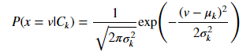

Naive Bayes Classifier
Classifier adalah model machine learning yang digunakan untuk membedakan objek berdasarkan fitur tertentu.
Naive Bayes Classifier adalah machine learning yang menggunakan probabilitas untuk mengklasfikasi objek dimana untuk setiap fitur X sejumlah n :
from IPython.display import Image
Image("img/nb1.png")
P adalah probabilitas yang muncul. Untuk data numerik P adalah:
from IPython.display import Image
Image("img/nb2.png")

dimana v adalah nilai dalam fitur, sigma k adalah Standar deviasi dan mu k adalah Rata-rata untuk K (kolom)
Langkah-Langkah Training
1. Ambil data set
from sklearn import datasets
from pandas import *
from numpy import *
from math import *
from IPython.display import HTML, display; from tabulate import tabulate
def table(df): display(HTML(tabulate(df, tablefmt='html', headers='keys', showindex=False)))
# IRIS TRAINING TABLE
iris = datasets.load_iris()
data = [list(s)+[iris.target_names[iris.target[i]]] for i,s in enumerate(iris.data)]
dataset = DataFrame(data, columns=iris.feature_names+['class']).sample(frac=0.2)
table(dataset)
| sepal length (cm) | sepal width (cm) | petal length (cm) | petal width (cm) | class |
|---|---|---|---|---|
| 5.2 | 3.5 | 1.5 | 0.2 | setosa |
| 5 | 2.3 | 3.3 | 1 | versicolor |
| 7.7 | 2.6 | 6.9 | 2.3 | virginica |
| 5.1 | 3.7 | 1.5 | 0.4 | setosa |
| 5.2 | 4.1 | 1.5 | 0.1 | setosa |
| 4.3 | 3 | 1.1 | 0.1 | setosa |
| 4.9 | 2.4 | 3.3 | 1 | versicolor |
| 5.5 | 2.4 | 3.7 | 1 | versicolor |
| 6.7 | 3.1 | 4.7 | 1.5 | versicolor |
| 5 | 3.5 | 1.6 | 0.6 | setosa |
| 6.1 | 3 | 4.9 | 1.8 | virginica |
| 5 | 3.5 | 1.3 | 0.3 | setosa |
| 6.9 | 3.2 | 5.7 | 2.3 | virginica |
| 4.9 | 3 | 1.4 | 0.2 | setosa |
| 7.2 | 3.2 | 6 | 1.8 | virginica |
| 5.4 | 3 | 4.5 | 1.5 | versicolor |
| 5.6 | 2.7 | 4.2 | 1.3 | versicolor |
| 4.6 | 3.2 | 1.4 | 0.2 | setosa |
| 5.8 | 2.6 | 4 | 1.2 | versicolor |
| 4.8 | 3 | 1.4 | 0.3 | setosa |
| 4.8 | 3 | 1.4 | 0.1 | setosa |
| 7.6 | 3 | 6.6 | 2.1 | virginica |
| 5.7 | 4.4 | 1.5 | 0.4 | setosa |
| 5.6 | 2.9 | 3.6 | 1.3 | versicolor |
| 6.7 | 3.1 | 4.4 | 1.4 | versicolor |
| 7.7 | 3 | 6.1 | 2.3 | virginica |
| 5.7 | 2.9 | 4.2 | 1.3 | versicolor |
| 6.7 | 3 | 5 | 1.7 | versicolor |
| 4.7 | 3.2 | 1.6 | 0.2 | setosa |
| 5.4 | 3.4 | 1.7 | 0.2 | setosa |
2. Sampel data untuk di tes
test = [3,5,2,4]
print("sampel data: ", test)
sampel data: [3, 5, 2, 4]
3. Identifikasi Per Grup Class Target untuk data Training
dataset_classes = {}
# table per classes
for key,group in dataset.groupby('class'):
mu_s = [group[c].mean() for c in group.columns[:-1]]
sigma_s = [group[c].std() for c in group.columns[:-1]]
dataset_classes[key] = [group, mu_s, sigma_s]
print(key, "===>")
print('Mu_s =>', array(mu_s))
print('Sigma_s =>', array(sigma_s))
table(group)
setosa ===>
Mu_s => [5.18333333 3.56666667 1.51666667 0.31666667]
Sigma_s => [0.3250641 0.22509257 0.14719601 0.1602082 ]
| sepal length (cm) | sepal width (cm) | petal length (cm) | petal width (cm) | class |
|---|---|---|---|---|
| 5 | 3.5 | 1.6 | 0.6 | setosa |
| 5.2 | 3.4 | 1.4 | 0.2 | setosa |
| 5 | 3.4 | 1.5 | 0.2 | setosa |
| 5.4 | 3.9 | 1.3 | 0.4 | setosa |
| 4.8 | 3.4 | 1.6 | 0.2 | setosa |
| 5.7 | 3.8 | 1.7 | 0.3 | setosa |
versicolor ===>
Mu_s => [5.89166667 2.76666667 4.13333333 1.26666667]
Sigma_s => [0.52476546 0.33393884 0.46188022 0.21461735]
| sepal length (cm) | sepal width (cm) | petal length (cm) | petal width (cm) | class |
|---|---|---|---|---|
| 5.7 | 2.8 | 4.1 | 1.3 | versicolor |
| 5.5 | 2.6 | 4.4 | 1.2 | versicolor |
| 5.5 | 2.4 | 3.7 | 1 | versicolor |
| 6 | 3.4 | 4.5 | 1.6 | versicolor |
| 5.7 | 2.6 | 3.5 | 1 | versicolor |
| 6 | 2.9 | 4.5 | 1.5 | versicolor |
| 5.6 | 2.5 | 3.9 | 1.1 | versicolor |
| 6.8 | 2.8 | 4.8 | 1.4 | versicolor |
| 6.7 | 3.1 | 4.4 | 1.4 | versicolor |
| 5.8 | 2.6 | 4 | 1.2 | versicolor |
| 6.4 | 3.2 | 4.5 | 1.5 | versicolor |
| 5 | 2.3 | 3.3 | 1 | versicolor |
virginica ===>
Mu_s => [6.61666667 3.13333333 5.58333333 2.06666667]
Sigma_s => [0.7790826 0.34465617 0.59670814 0.23868326]
| sepal length (cm) | sepal width (cm) | petal length (cm) | petal width (cm) | class |
|---|---|---|---|---|
| 6.3 | 3.3 | 6 | 2.5 | virginica |
| 6.4 | 3.1 | 5.5 | 1.8 | virginica |
| 5.8 | 2.7 | 5.1 | 1.9 | virginica |
| 6.7 | 3.1 | 5.6 | 2.4 | virginica |
| 6.5 | 3 | 5.2 | 2 | virginica |
| 5.6 | 2.8 | 4.9 | 2 | virginica |
| 5.9 | 3 | 5.1 | 1.8 | virginica |
| 7.7 | 3 | 6.1 | 2.3 | virginica |
| 6.8 | 3 | 5.5 | 2.1 | virginica |
| 7.7 | 3.8 | 6.7 | 2.2 | virginica |
| 6.1 | 3 | 4.9 | 1.8 | virginica |
| 7.9 | 3.8 | 6.4 | 2 | virginica |
5. Hitung Probabilitas Prior dan Likehood
WIP: Probabilitas Evidence masukkan ke hitungan
def numericalPriorProbability(v, mu, sigma):
return (1.0/sqrt(2 * pi * (sigma ** 2))*exp(-((v-mu)**2)/(2*(sigma**2))))
def categoricalProbability(sample,universe):
return sample.shape[0]/universe.shape[0]
Ps = ([[y]+[numericalPriorProbability(x, d[1][i], d[2][i]) for i,x in enumerate(test)]+
[categoricalProbability(d[0],dataset)] for y,d in dataset_classes.items()])
table(DataFrame(Ps, columns=["classes"]+["P( %d | C )" % d for d in test]+["P( C )"]))
| classes | P( 3 | C ) | P( 5 | C ) | P( 2 | C ) | P( 4 | C ) | P( C ) |
|---|---|---|---|---|---|
| setosa | 1.96232e-10 | 2.77721e-09 | 0.0123515 | 4.13093e-115 | 0.2 |
| versicolor | 1.93812e-07 | 2.31644e-10 | 2.01329e-05 | 1.11579e-35 | 0.4 |
| virginica | 1.07096e-05 | 4.94165e-07 | 9.87125e-09 | 9.46396e-15 | 0.4 |
6. Rank & Tarik Kesimpulan
Pss = ([[r[0], prod(r[1:])] for r in Ps])
PDss = DataFrame(Pss, columns=['class', 'probability']).sort_values('probability')[::-1]
table(PDss)
| class | probability |
|---|---|
| virginica | 1.97766e-34 |
| versicolor | 4.03412e-57 |
| setosa | 5.56132e-136 |
print("Prediksi Bayes untuk", test, "adalah", PDss.values[0,0])
Prediksi Bayes untuk [3, 5, 2, 4] adalah virginica
Setelah kita sudah menghitung untuk data training kita, kita akan lakukan test lagi untuk data asli kita
# ONE FUNCTION FOR CLASSIFIER
def predict(sampel):
priorLikehoods = ([[y]+[numericalPriorProbability(x, d[1][i], d[2][i]) for i,x in enumerate(sampel)]+
[categoricalProbability(d[0],dataset)] for y,d in dataset_classes.items()])
products = ([[r[0], prod(r[1:])] for r in priorLikehoods])
result = DataFrame(products, columns=['class', 'probability']).sort_values('probability')[::-1]
return result.values[0,0]
dataset_test = DataFrame([list(d)+[predict(d[:4])] for d in data], columns=list(dataset.columns)+['predicted class (by predict())'])
table(dataset_test)
| sepal length (cm) | sepal width (cm) | petal length (cm) | petal width (cm) | class | predicted class (by predict()) |
|---|---|---|---|---|---|
| 5.1 | 3.5 | 1.4 | 0.2 | setosa | setosa |
| 4.9 | 3 | 1.4 | 0.2 | setosa | setosa |
| 4.7 | 3.2 | 1.3 | 0.2 | setosa | setosa |
| 4.6 | 3.1 | 1.5 | 0.2 | setosa | setosa |
| 5 | 3.6 | 1.4 | 0.2 | setosa | setosa |
| 5.4 | 3.9 | 1.7 | 0.4 | setosa | setosa |
| 4.6 | 3.4 | 1.4 | 0.3 | setosa | setosa |
| 5 | 3.4 | 1.5 | 0.2 | setosa | setosa |
| 4.4 | 2.9 | 1.4 | 0.2 | setosa | setosa |
| 4.9 | 3.1 | 1.5 | 0.1 | setosa | setosa |
| 5.4 | 3.7 | 1.5 | 0.2 | setosa | setosa |
| 4.8 | 3.4 | 1.6 | 0.2 | setosa | setosa |
| 4.8 | 3 | 1.4 | 0.1 | setosa | setosa |
| 4.3 | 3 | 1.1 | 0.1 | setosa | setosa |
| 5.8 | 4 | 1.2 | 0.2 | setosa | setosa |
| 5.7 | 4.4 | 1.5 | 0.4 | setosa | setosa |
| 5.4 | 3.9 | 1.3 | 0.4 | setosa | setosa |
| 5.1 | 3.5 | 1.4 | 0.3 | setosa | setosa |
| 5.7 | 3.8 | 1.7 | 0.3 | setosa | setosa |
| 5.1 | 3.8 | 1.5 | 0.3 | setosa | setosa |
| 5.4 | 3.4 | 1.7 | 0.2 | setosa | setosa |
| 5.1 | 3.7 | 1.5 | 0.4 | setosa | setosa |
| 4.6 | 3.6 | 1 | 0.2 | setosa | setosa |
| 5.1 | 3.3 | 1.7 | 0.5 | setosa | setosa |
| 4.8 | 3.4 | 1.9 | 0.2 | setosa | setosa |
| 5 | 3 | 1.6 | 0.2 | setosa | setosa |
| 5 | 3.4 | 1.6 | 0.4 | setosa | setosa |
| 5.2 | 3.5 | 1.5 | 0.2 | setosa | setosa |
| 5.2 | 3.4 | 1.4 | 0.2 | setosa | setosa |
| 4.7 | 3.2 | 1.6 | 0.2 | setosa | setosa |
| 4.8 | 3.1 | 1.6 | 0.2 | setosa | setosa |
| 5.4 | 3.4 | 1.5 | 0.4 | setosa | setosa |
| 5.2 | 4.1 | 1.5 | 0.1 | setosa | setosa |
| 5.5 | 4.2 | 1.4 | 0.2 | setosa | setosa |
| 4.9 | 3.1 | 1.5 | 0.2 | setosa | setosa |
| 5 | 3.2 | 1.2 | 0.2 | setosa | setosa |
| 5.5 | 3.5 | 1.3 | 0.2 | setosa | setosa |
| 4.9 | 3.6 | 1.4 | 0.1 | setosa | setosa |
| 4.4 | 3 | 1.3 | 0.2 | setosa | setosa |
| 5.1 | 3.4 | 1.5 | 0.2 | setosa | setosa |
| 5 | 3.5 | 1.3 | 0.3 | setosa | setosa |
| 4.5 | 2.3 | 1.3 | 0.3 | setosa | setosa |
| 4.4 | 3.2 | 1.3 | 0.2 | setosa | setosa |
| 5 | 3.5 | 1.6 | 0.6 | setosa | setosa |
| 5.1 | 3.8 | 1.9 | 0.4 | setosa | setosa |
| 4.8 | 3 | 1.4 | 0.3 | setosa | setosa |
| 5.1 | 3.8 | 1.6 | 0.2 | setosa | setosa |
| 4.6 | 3.2 | 1.4 | 0.2 | setosa | setosa |
| 5.3 | 3.7 | 1.5 | 0.2 | setosa | setosa |
| 5 | 3.3 | 1.4 | 0.2 | setosa | setosa |
| 7 | 3.2 | 4.7 | 1.4 | versicolor | versicolor |
| 6.4 | 3.2 | 4.5 | 1.5 | versicolor | versicolor |
| 6.9 | 3.1 | 4.9 | 1.5 | versicolor | versicolor |
| 5.5 | 2.3 | 4 | 1.3 | versicolor | versicolor |
| 6.5 | 2.8 | 4.6 | 1.5 | versicolor | versicolor |
| 5.7 | 2.8 | 4.5 | 1.3 | versicolor | versicolor |
| 6.3 | 3.3 | 4.7 | 1.6 | versicolor | versicolor |
| 4.9 | 2.4 | 3.3 | 1 | versicolor | versicolor |
| 6.6 | 2.9 | 4.6 | 1.3 | versicolor | versicolor |
| 5.2 | 2.7 | 3.9 | 1.4 | versicolor | versicolor |
| 5 | 2 | 3.5 | 1 | versicolor | versicolor |
| 5.9 | 3 | 4.2 | 1.5 | versicolor | versicolor |
| 6 | 2.2 | 4 | 1 | versicolor | versicolor |
| 6.1 | 2.9 | 4.7 | 1.4 | versicolor | versicolor |
| 5.6 | 2.9 | 3.6 | 1.3 | versicolor | versicolor |
| 6.7 | 3.1 | 4.4 | 1.4 | versicolor | versicolor |
| 5.6 | 3 | 4.5 | 1.5 | versicolor | versicolor |
| 5.8 | 2.7 | 4.1 | 1 | versicolor | versicolor |
| 6.2 | 2.2 | 4.5 | 1.5 | versicolor | versicolor |
| 5.6 | 2.5 | 3.9 | 1.1 | versicolor | versicolor |
| 5.9 | 3.2 | 4.8 | 1.8 | versicolor | virginica |
| 6.1 | 2.8 | 4 | 1.3 | versicolor | versicolor |
| 6.3 | 2.5 | 4.9 | 1.5 | versicolor | versicolor |
| 6.1 | 2.8 | 4.7 | 1.2 | versicolor | versicolor |
| 6.4 | 2.9 | 4.3 | 1.3 | versicolor | versicolor |
| 6.6 | 3 | 4.4 | 1.4 | versicolor | versicolor |
| 6.8 | 2.8 | 4.8 | 1.4 | versicolor | versicolor |
| 6.7 | 3 | 5 | 1.7 | versicolor | virginica |
| 6 | 2.9 | 4.5 | 1.5 | versicolor | versicolor |
| 5.7 | 2.6 | 3.5 | 1 | versicolor | versicolor |
| 5.5 | 2.4 | 3.8 | 1.1 | versicolor | versicolor |
| 5.5 | 2.4 | 3.7 | 1 | versicolor | versicolor |
| 5.8 | 2.7 | 3.9 | 1.2 | versicolor | versicolor |
| 6 | 2.7 | 5.1 | 1.6 | versicolor | versicolor |
| 5.4 | 3 | 4.5 | 1.5 | versicolor | versicolor |
| 6 | 3.4 | 4.5 | 1.6 | versicolor | versicolor |
| 6.7 | 3.1 | 4.7 | 1.5 | versicolor | versicolor |
| 6.3 | 2.3 | 4.4 | 1.3 | versicolor | versicolor |
| 5.6 | 3 | 4.1 | 1.3 | versicolor | versicolor |
| 5.5 | 2.5 | 4 | 1.3 | versicolor | versicolor |
| 5.5 | 2.6 | 4.4 | 1.2 | versicolor | versicolor |
| 6.1 | 3 | 4.6 | 1.4 | versicolor | versicolor |
| 5.8 | 2.6 | 4 | 1.2 | versicolor | versicolor |
| 5 | 2.3 | 3.3 | 1 | versicolor | versicolor |
| 5.6 | 2.7 | 4.2 | 1.3 | versicolor | versicolor |
| 5.7 | 3 | 4.2 | 1.2 | versicolor | versicolor |
| 5.7 | 2.9 | 4.2 | 1.3 | versicolor | versicolor |
| 6.2 | 2.9 | 4.3 | 1.3 | versicolor | versicolor |
| 5.1 | 2.5 | 3 | 1.1 | versicolor | versicolor |
| 5.7 | 2.8 | 4.1 | 1.3 | versicolor | versicolor |
| 6.3 | 3.3 | 6 | 2.5 | virginica | virginica |
| 5.8 | 2.7 | 5.1 | 1.9 | virginica | virginica |
| 7.1 | 3 | 5.9 | 2.1 | virginica | virginica |
| 6.3 | 2.9 | 5.6 | 1.8 | virginica | virginica |
| 6.5 | 3 | 5.8 | 2.2 | virginica | virginica |
| 7.6 | 3 | 6.6 | 2.1 | virginica | virginica |
| 4.9 | 2.5 | 4.5 | 1.7 | virginica | versicolor |
| 7.3 | 2.9 | 6.3 | 1.8 | virginica | virginica |
| 6.7 | 2.5 | 5.8 | 1.8 | virginica | virginica |
| 7.2 | 3.6 | 6.1 | 2.5 | virginica | virginica |
| 6.5 | 3.2 | 5.1 | 2 | virginica | virginica |
| 6.4 | 2.7 | 5.3 | 1.9 | virginica | virginica |
| 6.8 | 3 | 5.5 | 2.1 | virginica | virginica |
| 5.7 | 2.5 | 5 | 2 | virginica | virginica |
| 5.8 | 2.8 | 5.1 | 2.4 | virginica | virginica |
| 6.4 | 3.2 | 5.3 | 2.3 | virginica | virginica |
| 6.5 | 3 | 5.5 | 1.8 | virginica | virginica |
| 7.7 | 3.8 | 6.7 | 2.2 | virginica | virginica |
| 7.7 | 2.6 | 6.9 | 2.3 | virginica | virginica |
| 6 | 2.2 | 5 | 1.5 | virginica | versicolor |
| 6.9 | 3.2 | 5.7 | 2.3 | virginica | virginica |
| 5.6 | 2.8 | 4.9 | 2 | virginica | virginica |
| 7.7 | 2.8 | 6.7 | 2 | virginica | virginica |
| 6.3 | 2.7 | 4.9 | 1.8 | virginica | virginica |
| 6.7 | 3.3 | 5.7 | 2.1 | virginica | virginica |
| 7.2 | 3.2 | 6 | 1.8 | virginica | virginica |
| 6.2 | 2.8 | 4.8 | 1.8 | virginica | virginica |
| 6.1 | 3 | 4.9 | 1.8 | virginica | virginica |
| 6.4 | 2.8 | 5.6 | 2.1 | virginica | virginica |
| 7.2 | 3 | 5.8 | 1.6 | virginica | virginica |
| 7.4 | 2.8 | 6.1 | 1.9 | virginica | virginica |
| 7.9 | 3.8 | 6.4 | 2 | virginica | virginica |
| 6.4 | 2.8 | 5.6 | 2.2 | virginica | virginica |
| 6.3 | 2.8 | 5.1 | 1.5 | virginica | versicolor |
| 6.1 | 2.6 | 5.6 | 1.4 | virginica | versicolor |
| 7.7 | 3 | 6.1 | 2.3 | virginica | virginica |
| 6.3 | 3.4 | 5.6 | 2.4 | virginica | virginica |
| 6.4 | 3.1 | 5.5 | 1.8 | virginica | virginica |
| 6 | 3 | 4.8 | 1.8 | virginica | virginica |
| 6.9 | 3.1 | 5.4 | 2.1 | virginica | virginica |
| 6.7 | 3.1 | 5.6 | 2.4 | virginica | virginica |
| 6.9 | 3.1 | 5.1 | 2.3 | virginica | virginica |
| 5.8 | 2.7 | 5.1 | 1.9 | virginica | virginica |
| 6.8 | 3.2 | 5.9 | 2.3 | virginica | virginica |
| 6.7 | 3.3 | 5.7 | 2.5 | virginica | virginica |
| 6.7 | 3 | 5.2 | 2.3 | virginica | virginica |
| 6.3 | 2.5 | 5 | 1.9 | virginica | virginica |
| 6.5 | 3 | 5.2 | 2 | virginica | virginica |
| 6.2 | 3.4 | 5.4 | 2.3 | virginica | virginica |
| 5.9 | 3 | 5.1 | 1.8 | virginica | virginica |
Kesimpulan
corrects = dataset_test.loc[dataset_test['class'] == dataset_test['predicted class (by predict())']].shape[0]
print('Prediksi Training Bayes: %d of %d == %f %%' % (corrects, len(data), corrects / len(data) * 100))
Prediksi Training Bayes: 144 of 150 == 96.000000 %